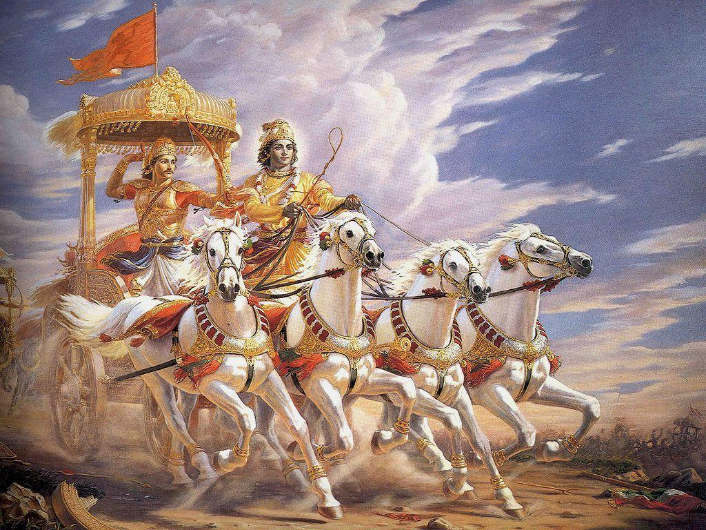

TEASER OF BHAGAVAD GITA

- Bhagavad-Gita is the essence of all the Vedic knowledge and is one of the most important Upanishads in Vedic Literature.
- Bhagavad-Gita is a classic of timeless wisdom, the summum bonum of spiritual truth. It has deeply influenced the thinking of generation of philosophers, theologians, educators, scientists and authors all over the world.
- Bhagavad-Gita originally appears in the form of 700 Sanskrit versions, as an episode of the Mahabharata, a great historical epic, in which it occupies changes 25 through 42 in the Bhisma -parva
- To deliver mankind from Ignorance
- Every man is in difficulty in so many ways, as Arjuna was in difficulty in having to fight the battle of Kurukshetra. Arjuna, forgetful of his prescribed duties as a kshatriya(warrior) , whose duty is to fight for a righteous cause in a holy war.
- Lord Krishna, who agreed to act as the driver of Arjuna chariot see his friend and devotee in illusion and perplexity. He than proceeds to enlighten Arjuna regarding his immediate social duty as a warrior and more important, his eternal duty or nature (Sanatana-dharma) as a spirit soul
- To revive the eternal relationship of love between each soul and God.
- Krishna speaks for the benefits of all souls, who have forgotten their eternal nature and eternal relationship of love with him. To revive this relationship is the ultimate goal of our existence
- The activities of eating, sleeping, mating and defending are common in animals and human beings. The human beings are considered superior only when they inquire about the Absolute Truth, otherwise they are considered as good as animal.
- By understanding the Bhagavad-Gita, it is possible to understand the relationship between the GOD and the SOUL. This is called ‘Sambandha’.
- Process of reviving the soul’s relationship with God, this is called Abhidheya.
- To make a permanent solution to the suffering in this world
- Bhagavad-Gita should be understood in a spirit of devotion. Otherwise, it will be like a bee licking the outside of a bottle of honey. One cannot have the taste of honey unless one opens the bottle. Similarly, the spiritual wisdom and mysticism of the Bhagavad-Gita can be understood only by the devotees and not by others.
- The Bhagavad-Gita essentially deals with the following five topics
- Eswara (God)
- Jiva (Spirit-Soul)
- Prakriti (Material nature)
- Kala (Time)
- Karma (Activity)
- Modern science has absolutely no understanding of the first two of the five subjects of Bhagavad-Gita (Isvara and Jiva) and very limited and imperfect understanding of the last three subjects (Prakriti, Kala and Karma)
- This is because the very process of acquiring knowledge that it follows is defective. It is called the ascending or inductive process (aroha-pantha)
- The inductive or ascending process means to not accept any authority and to try to find out the truth by one’s own endeavor and speculation.
- As opposed to the inductive or ascending process, is the deductive or descending process (Avaroha-Pantha)
- The deductive or the descending process means to accept a bona fide authority and learn the truth by inquiring from that authority.
- The inductive process is always fraught with uncertainty and inaccuracy
- Scriptures like the Bhagavad-Gita are the perfect authority from which we can acquired knowledge, because they are the word of God. This is the simple and straightforward method to obtain true knowledge.
- The word of GOD
- The law book of life
- A manual for the universe
- Absolute knowledge
- Perfect Science
- The Vedas are a very ancient body of knowledge. It means “the aggregate of knowledge”
- Before it compiled, the Vedic literatures was simple heard and disciples would imbibe the knowledge by hearing. Later Vyasadeva thought it wise to write down the Vedas because in this age (Kali Yuga) people have short memories and are unable to remember Vedic instructions.
- He compiled the four Vedas-Sama, Yajur , Rg, Atharva, the 108 Upanishads, the 18 PURANSAS, THE Vedanta-Sutra, the Mahabharata and many others.
This Is How The Bhagvad Gita Influenced These Famous Personalities From Around The World
"When I read the Bhagavad-Gita and reflect about how God created this universe everything else seems so superfluous. I have made the Bhagwad-Gita as the main source of my inspiration and guide for the purpose of scientific investigations and formation of my theories"
 Albert Einstein
Albert Einstein
"Those are spiritual things to reflect upon yourself, life, the world around you and see things the other way. I thought it was quite appropriat".
 Sunitha Williams
Sunitha Williams
That the spiritual man need not be a recluse, that union with the divine life may be achieved and maintained in the midst of worldly affairs, that the obstacles to that union lie not outside us but within us—such is the central lesson of the Bhagvad Gita."
Annie Besant"When doubts haunt me, when disappointments stare me in the face, and I see not one ray of hope on the horizon, I turn to Bhagavad-Gita and find a verse to comfort me; and I immediately begin to smile in the midst of overwhelming sorrow. Those who meditate on the Gita will derive fresh joy and new meanings from it every day".
Mohandas Karamchand Gandhi"Now I am become Death, the destroyer of worlds".
J. Robert OppenheimerI am 90 % through the Bhagavad Gita... My inner Arjuna is being channelled
 Will Smith
Will Smith